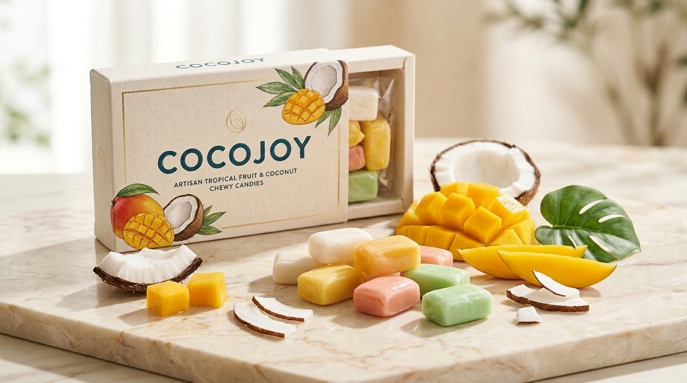

Tải dữ liệu đầu vào
Tải File Brief (.docx) để nắm thông số từng cảnh quay và tải Ảnh sản phẩm (.png) nếu bài có sẵn hình gốc.
Bài tập mở rộng · Tạo Video AI
Luyện tập dựng video quảng cáo sản phẩm (Ghế, Kẹo) và video giới thiệu điểm đến du lịch (Đà Nẵng) từ bộ dữ liệu đầu vào chuẩn chỉnh.
Tải File Brief (.docx) để nắm thông số từng cảnh quay và tải Ảnh sản phẩm (.png) nếu bài có sẵn hình gốc.
Dùng Frames to Video (đặt ảnh làm khung đầu) hoặc Ingredients to Video để AI giữ nguyên kiểu dáng sản phẩm.
Nhập lệnh mô tả rõ: Chủ thể + Hành động + Góc máy + Ánh sáng + Âm thanh (Audio) để tạo từng clip ngắn 8 giây bằng Veo.
Đưa 3 clip vừa tạo vào Scenebuilder theo đúng thứ tự Mở đầu → Chi tiết → Kết cảnh rồi xuất video 24 giây hoàn chỉnh.
Tình huống. Bạn phụ trách truyền thông cho thương hiệu nội thất văn phòng ErgoAir. Công ty cần một video quảng cáo ngắn 24 giây (gồm 3 cảnh quay nối tiếp) để chạy giới thiệu mẫu ghế công thái học ErgoAir Pro cho dân văn phòng.
Vấn đề. Nếu chỉ gõ lệnh chữ chung chung, AI rất dễ tự vẽ sai kiểu dáng chân ghế, lưới lưng hoặc đổi màu ghế giữa các cảnh quay.
Mục tiêu. Nạp ảnh sản phẩm thật (img-ghe-ergoair.png) vào mục Frames / Ingredients của Google Flow để giữ nguyên mẫu ghế qua 3 cảnh: Toàn cảnh ban mai → Cận chất liệu lưới & ngả lưng → Nhân viên làm việc thoải mái, rồi ghép trên Scenebuilder.

Slow cinematic camera push-in and subtle 15-degree orbit around the modern charcoal-mesh ergonomic office chair from the start frame. Warm morning sunlight streams gently through the window, casting soft shadows on the minimalist floor. Realistic commercial photography style, 4k sharp focus on the chair silhouette. Gentle ambient piano music and peaceful morning room tone.
Mẹo: Chọn chế độ Frames to Video và tải img-ghe-ergoair.png vào ô khung hình đầu để giữ chính xác mẫu ghế.
Macro close-up tracking shot gliding smoothly along the breathable charcoal mesh backrest and curved lumbar support of the ergonomic chair. An office worker in smart-casual attire leans back smoothly as the chair reclines effortlessly. Warm natural rim lighting, shallow depth of field. Subtle soft hydraulic click and warm acoustic music.
Mẹo: Chọn Ingredients to Video và gắn ảnh ghế vào mục Ingredient để quay cận cảnh chất liệu mà không bị đổi thiết kế.
Smooth slow pull-back shot showing a smiling young designer working comfortably on a laptop while seated in the charcoal-mesh ergonomic chair beside a wooden desk with a steaming coffee mug. Bright morning sunlight fills the clean modern studio. Soft keyboard typing sound blending into an uplifting commercial music ending.
Mẹo: Kéo 3 clip theo thứ tự Shot 1 → Shot 2 → Shot 3 vào Scenebuilder để xuất video 24 giây hoàn chỉnh.
Tình huống. Thương hiệu đặc sản CocoJoy chuẩn bị ra mắt dòng kẹo dẻo dừa sáp kết hợp trái cây nhiệt đới (xoài, chanh dây) cho nhân viên văn phòng và khách du lịch. Bạn cần dựng video quảng cáo bắt mắt, kích thích vị giác.
Vấn đề. Quay đồ ăn/kẹo cần màu sắc tươi sáng, chuyển động chậm (slow-motion) mịn màng và bao bì/viên kẹo không bị biến dạng méo mó giữa các cảnh.
Mục tiêu. Sử dụng ảnh studio hộp kẹo đầu vào (img-keo-cocojoy.png) kết hợp câu lệnh mô tả chuyển động quay chậm (120fps) và ánh sáng studio ấm để tạo 3 clip quảng cáo hấp dẫn trên Google Flow.

Smooth slow dolly-in camera movement across the warm cream marble table toward the open colorful CocoJoy candy box surrounded by fresh coconut slices and ripe mango pieces. Soft golden studio rim light shimmers gently on the candies. Appetizing food commercial style, cheerful acoustic pop music.
Mẹo: Nạp img-keo-cocojoy.png làm Start Frame ở chế độ Frames to Video để bắt đầu mượt mà.
Ultra-smooth 120fps slow-motion macro food commercial shot: two pastel tropical fruit and coconut chewy candies drop gently onto fresh white coconut slices while golden mango juice droplets glisten in warm studio light. Crisp appetizing textures, shallow depth of field. Delicate water-droplet sound and upbeat chime.
Mẹo: Dùng từ khóa 120fps slow-motion macro food commercial để Veo diễn tả chuyển động rơi chậm và giọt nước sắc nét.
Warm medium shot of a cheerful young office worker unwrapping and enjoying a pastel tropical candy at a sunlit desk, with the open CocoJoy box sharp in the foreground. Natural warm sunlight, clean modern lifestyle commercial look. Subtle wrapper crinkle sound and bright uplifting music finale.
Mẹo: Gắn img-keo-cocojoy.png vào Ingredients để hộp kẹo ở tiền cảnh giữ đúng màu sắc và hình dáng.
Tình huống. Bạn đang biên tập một video quảng bá du lịch ngắn (24 giây) giới thiệu vẻ đẹp thành phố biển Đà Nẵng qua 3 khoảnh khắc đặc trưng: Cầu Rồng bắc qua sông Hàn lúc hoàng hôn, bình minh trên bãi biển Mỹ Khê và không khí sôi động bên sông Hàn về đêm.
Vấn đề. Khi không có sẵn ảnh flycam hay cảnh quay thực địa, bạn cần mô tả thật chuẩn thời điểm ánh sáng, góc máy (aerial drone, low-angle gliding) và âm thanh tự nhiên để AI tạo cảnh không bị giả hoặc rời rạc giữa các khung hình.
Mục tiêu. Đọc kỹ bảng phân cảnh trong file Brief (DOCX), thực hành chế độ Text to Video trên Google Flow để tạo 3 clip phong cách Cinematic Travel Film rồi ghép nối liền mạch trong Scenebuilder.
Sweeping cinematic aerial drone shot gliding smoothly toward the iconic golden Dragon Bridge spanning across the Han River in Da Nang, Vietnam at sunset. Warm amber and purple sky reflects off the calm river surface as city skyline lights begin to glow. Natural realistic travel film, 4k clarity. Soft breeze and inspiring orchestral travel music rising gently.
Mẹo: Mô tả rõ góc máy Sweeping cinematic aerial drone shot và thời điểm at sunset để khung hình có chiều sâu.
Low-angle smooth tracking shot gliding along My Khe beach in Da Nang at sunrise. Crystal-clear turquoise ocean waves roll gently onto golden sand while a few travelers walk peacefully along the shoreline under soft pink morning sunlight. Realistic cinematic travel documentary style. Authentic gentle ocean waves and soft melodic background music.
Mẹo: Thêm mô tả âm thanh Authentic gentle ocean waves giúp Veo tạo tiếng sóng biển chân thực theo chuyển động sóng.
Warm medium shot at a cozy riverside cafe overlooking the Han River in Da Nang at night. Two friends smile and raise glasses of iced coffee while admiring the brightly lit illuminated Dragon Bridge and city reflections in the background. Shallow depth of field, warm bokeh lights. Soft evening city ambiance and heartwarming music finale.
Mẹo: Ghép cả 3 clip trong Scenebuilder để hoàn thành thước phim du lịch 24 giây chuyển cảnh mượt từ hoàng hôn đến đêm.